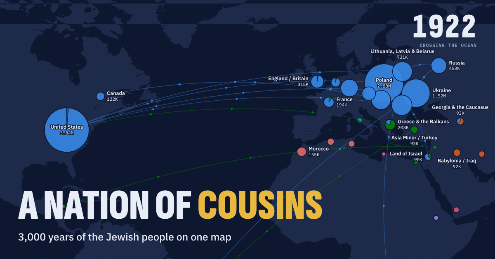
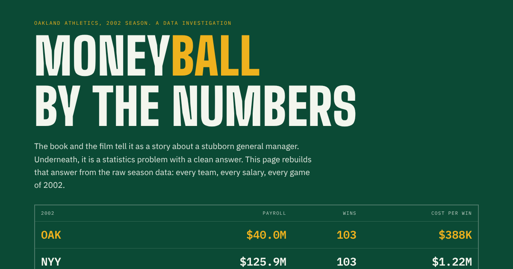
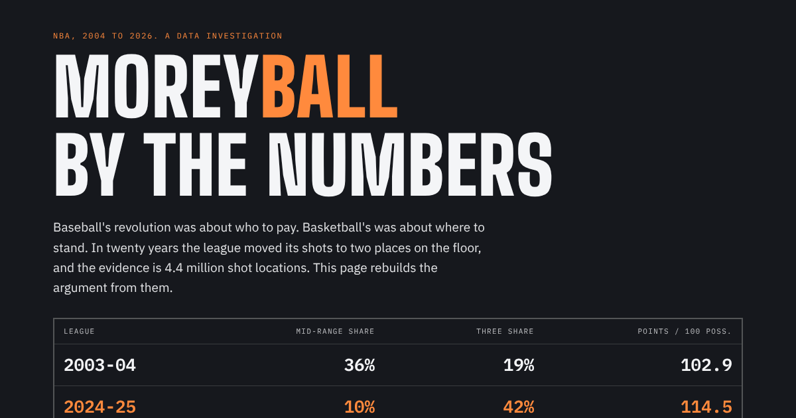
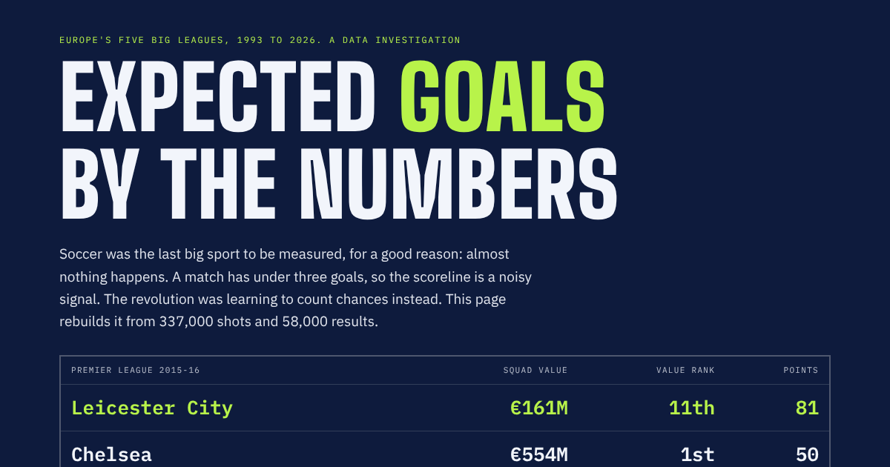

Data Stories
Each page takes one subject and explains it through its numbers, with charts and maps you can play with.

A Nation of Cousins
3,000 years of the Jewish people on one animated map, and why any two Ashkenazi Jews are about fourth cousins.Open →
Moneyball by the Numbers
The 2002 Oakland A's rebuilt from the raw season data: how a poor team bought wins cheaply.Open →
Moreyball by the Numbers
How the NBA moved its shots to two places on the floor, told through 4.4 million shot locations.Open →